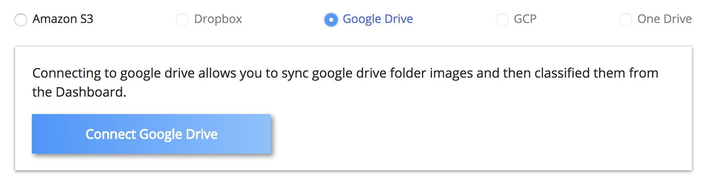
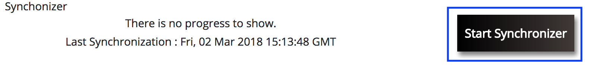

By default you can connect to your Personal or Business Google Drive account by clicking on Connect to Google Drive button.
Below is the screenshot for the same,

Upon connecting there will be a folder titled OCLAVI onto your connected Google Drive, now, upload/move the images into the newly created folder titled OCLAVI.
Once, the files are moved, click on Start Syncronizer button, below is the screenshot for the same,

Go to Image Settings tab in profile page and select the preferrect Storage Type. Below are the respective storage type steps to syncronize your images,
In AWS S3, you have provide the below list of items to syncronize the images,
Access Key
How do I get an access key for Amazon S3?
Go to Amazon Web Services console and click on the name of your account (it is located in the top right corner of the console). Then, in the expanded drop-down list, select Security Credentials.
 Click the Continue to Security Credentials button.
Click the Continue to Security Credentials button.
 Expand the Access Keys (Access Key ID and Secret Access Key) option. You will see the list of your active and deleted access keys.
Expand the Access Keys (Access Key ID and Secret Access Key) option. You will see the list of your active and deleted access keys.
 To generate new access keys, click the Create New Access Key button.
To generate new access keys, click the Create New Access Key button.
 Click Show Access Key to have it displayed on the screen. Note, that you can download it to your machine as a file and open it whenever needed. To download it, just click the Download Key File button.
Click Show Access Key to have it displayed on the screen. Note, that you can download it to your machine as a file and open it whenever needed. To download it, just click the Download Key File button.
 Attention! If you do not write down the key or download the key file to your computer before you press "Close" or "Cancel" you will not be able to retrieve the secret key in future. Then you'll have to delete the keys which you created and start to create new keys.
Secret Key
How do I get an secret access key for Amazon S3?
When you create the new access key, at that time you also get the secret access key.
Attention! If you do not write down the key or download the key file to your computer before you press "Close" or "Cancel" you will not be able to retrieve the secret key in future. Then you'll have to delete the keys which you created and start to create new keys.
Secret Key
How do I get an secret access key for Amazon S3?
When you create the new access key, at that time you also get the secret access key.
Bucket Region
Select the region from the dropdown where the bucket is available.
Bucket Name
Give the exact bucket name
Upon Image settings click on the
Syncronizer button which is there on the
Image Settings tab on your
OCLAVI Profile Page.
Below is the screenshot for the same,
Once the Syncronizer is run, then go to Label Settings tab in profile page and follow the below steps to add labels. Add a label name, category and click on Add Label button.
If, signed up as Admin user, then follow the below steps to invite users to annotate, Go to Invite Users tab in profile page and follow the below steps to invite your own team members to classify the objects. Add inviting user full name. Add inviting user email address, ensure to provide a valid email as it needs to verified. Add a password for the inviting user and click on Send Invite button. In case if you are running out of seats to invite user, please increase the seats via "+" and click on Buy Now button.